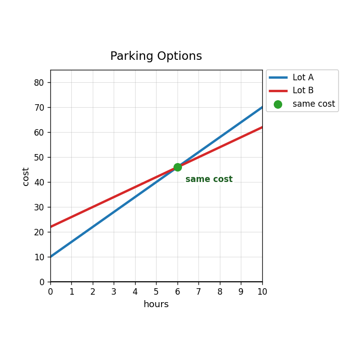

Extra Practice 3.3.4
A parking garage charges 10 dollars plus 6 dollars per hour. Another lot charges 22 dollars plus 4 dollars per hour. Let $h$ be hours and $C$ be total cost. Define the variables in context.
Write and solve a system for the two parking options. Interpret the solution.

A student says the solution $(6,46)$ means both parking options cost 6 dollars after 46 hours. Critique and correct the interpretation.
Create two different fundraising plans that are equal after 8 items sold. Write the system and explain the meaning of the solution.
Which equation correctly starts solving $y=5x+6$ and $y=3x+18$?
- $5x+6=3x+18$
- $5x+3x=18$
- $y=8x+24$
- $5x=3x$
Solve $4x+y=31$ for $y$.
Use Substitution Spiral B to estimate the intersection and name the ordered pair solution.

Check whether $(3,7)$ satisfies $y=2x+1$ and $y=-x+10$.
Solve by substitution.
$$y=5x+6$$
$$y=3x+18$$
Solve by substitution.
$$4x+y=31$$
$$y=3x+3$$
A student solves $4x+y=31$ and $y=3x+3$ by writing $4x+3x=31$. Identify the missing term and correct the equation.
For a context system, explain how you would decide whether to use graphing, substitution, or elimination.
What does a graph with parallel lines tell you about the number of solutions?
Use the graphical-solution review to identify the shared ordered pair and explain how you know it works for both lines.

Use the same-line graph to explain why there are infinitely many solutions.

Change one equation in a no-solution system so that it has exactly one solution. Explain your revision.